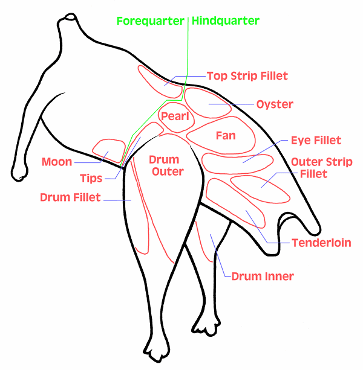

Cuts of Ostrich and Emu
Note that this chart is based on other charts that are difficult to
interpret, and
naming of cuts is in flux, varying from chart to chart and country
to country,
so this chart is not definitive, but should serve well enough for
culinary purposes.
See our Ostrich &
Emu page for details.
Diagram © cg1.